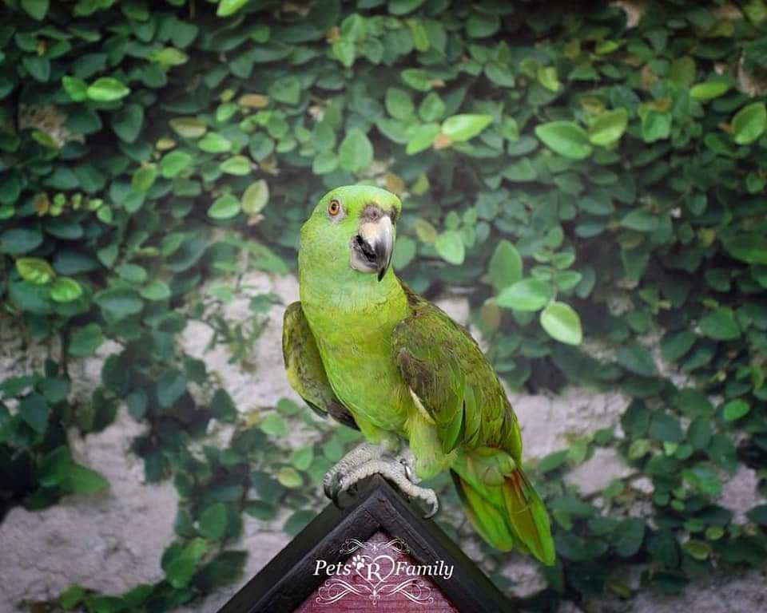
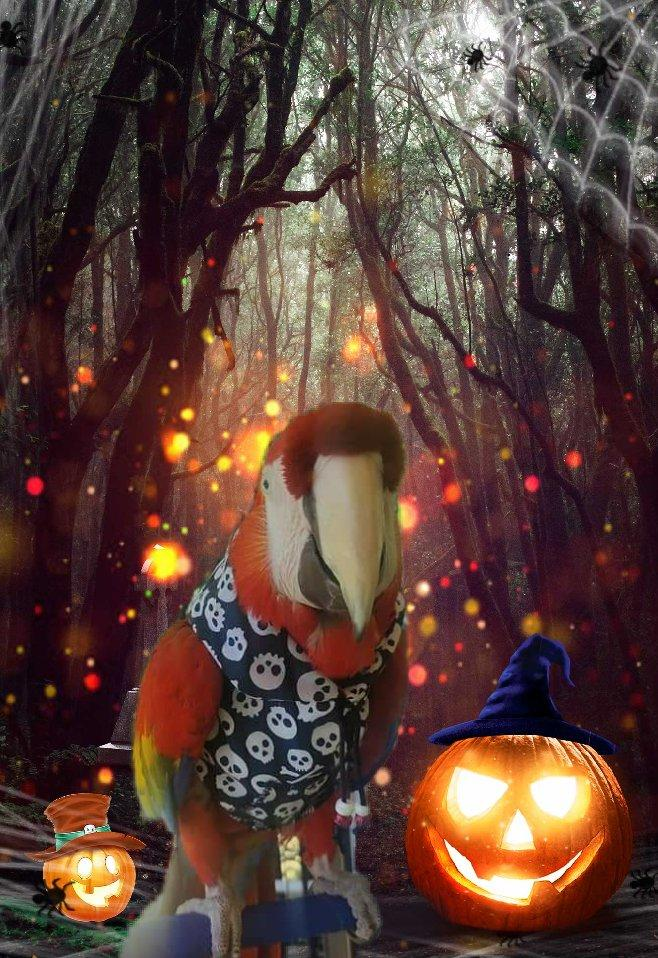
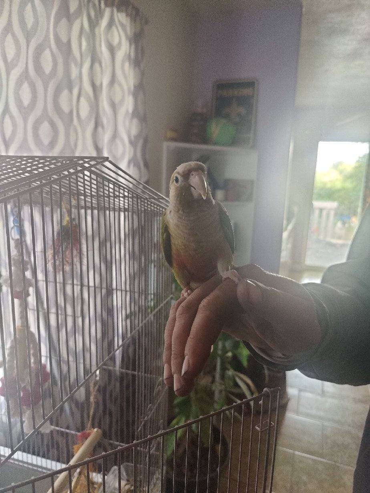

Consider adopting!
We will help find you a wonderful companion. Utah Avian Adoption will make sure we find you the best companion for you and your home. A few things we do require before you adopt are:
- You take a two day class on how to care for your companion.
- We inspect your home for possible items that could hurt or be dangerous to your companion.
- You agree to update us on vet appointments (including emergencies).
- You do a yearly checkup with us so we know the companion is safe in your home.
Photoshoot
We have a photoshoot which we can work with you on getting a cute picture of your birds! You can get them for postcards, gifts, or just a photo to put in a frame!
Costumes
We have many sources we can help give you some costumes that are bird friendly for special occasions! Mind you some birds aren't okay with having these on, but we'll help make sure that your pet is comfortable!
Bird Handling
For newer bird owners, we'll also show you how to handle them with care, some birds aren't comfortable as you have to slowly get them comfortable enough to hold them.